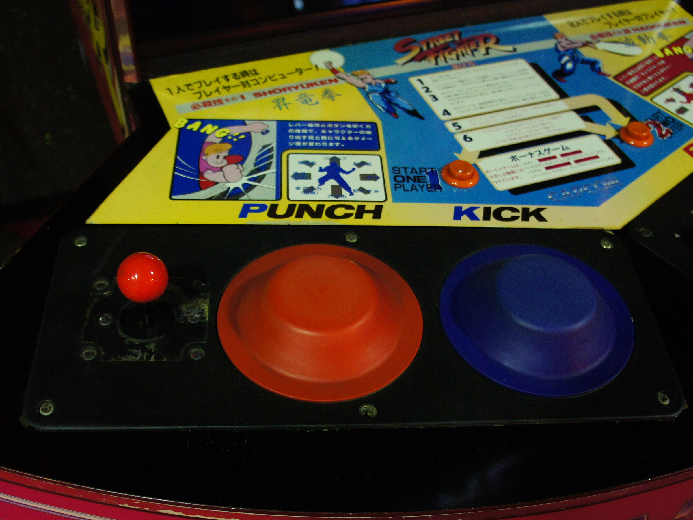
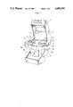

Street Fighter Pneumatic Controller
The arcade cabinet that hurt you back — punch pads that sensed force through compressed air

Overview
Released in August 1987, the original Street Fighter arcade game is remembered less for its gameplay than for its deluxe cabinet's extraordinary input mechanism. Instead of the six-button layout that would define the fighting game genre, the deluxe crescent-shaped cabinet featured two large rubber-covered pneumatic pads — one red for punch, one blue for kick — flanking a standard joystick. Striking a pad drove a piston into a cylinder, compressing air in a sealed lower chamber. A diffused semiconductor pressure transducer converted the pressure spike into a proportional voltage, which the game software thresholded to determine light, medium, or heavy attack strength. The system was a collaboration between Capcom (Japan), who developed the game, and Atari Games (USA), who designed the cabinet and sourced the pneumatic components from SMC Pneumatics in California.
The pneumatic controller proved disastrous in practice. Players — encouraged by arcade flyers showing closed fists and violent strikes — punched the pads hard enough to draw blood. The cabinets broke down constantly as pneumatic tubes disconnected and components failed. Capcom USA executives feared lawsuits. After approximately 1,000 pneumatic units were sold, Capcom recalled them and replaced the pads with a conventional six-button layout. The six-button version went on to sell tens of thousands of units. The pneumatic ROMs — the specialized software that could interpret pressure-sensor signals — were lost for decades until restoration enthusiast Vincent Pureza reverse-engineered the system between 2019 and 2023, discovering that Capcom had burned entirely different ROMs for the pneumatic and six-button versions.
Deep dive
The interaction chain is remarkably elegant: (1) Player strikes the rubber bash pad mounted on a metal plate. (2) The strike drives a slider button — a cylindrical piston head connected via ball joint to a piston rod — downward into a cylinder. (3) The piston compresses air in the lower cylinder chamber. A compression coil spring provides resistance and return force. (4) A small-diameter bleed port, always open to atmosphere, allows slow air escape. A fast strike generates high pressure before air can bleed out; a slow push dissipates pressure through the port — making the sensor speed-dependent, preventing cheating by leaning on the pad. (5) A pressure take-out port routes the pressurized air through a flexible silicone tube into a metal Junction Box (a passive pass-through manifold — not a regulator, as long speculated), then to the Pneumatic PCB. (6) A diffused semiconductor pressure transducer on the PCB converts air pressure to voltage. (7) The game software compares the voltage against three preset thresholds to register light, medium, or heavy attacks. The pneumatic hardware required a specific ROM set — the 6-button ROMs simply cannot interpret pressure sensor input.
The pneumatic controller failed on multiple fronts. Physically: players injured themselves. 'Everybody was getting injured,' recalled Joe Morici, Capcom USA's SVP. 'I hurt my hand a few times. There were times when I had to use my elbow,' said player Tomotaka Suzuki. Director Takashi Nishiyama confirmed the development team knew: 'During development, we had a prototype of the sensor... Our planner, Hiroshi Matsumoto, had his hands swell up... Yoshiki Okamoto tested it and got scratches on his fists.' Commercially: the physical exertion meant players tired too quickly to keep feeding quarters — the opposite of what an arcade operator needs. 'It was basically like exercising. The whole point of monetizing this business was to get people to become repeat customers,' Nishiyama said. Mechanically: the cabinets broke down constantly. 'Capcom didn't know what it was doing — it didn't specialize in mechatronics,' Nishiyama admitted. Legally: Capcom USA feared lawsuits. 'I think we were worried about getting sued as well,' said Aldo Donnaloia, Capcom USA's Western regional sales manager. The correct technique — an open palm hovering directly above the pad with a controlled, soft touch — was explained by Japanese gaming magazine editors, but the arcade flyer showed a closed fist, actively encouraging the damaging behavior.
A critical technical detail discovered during Vincent Pureza's 2019–2023 restoration: the pneumatic version and the six-button version used entirely different ROM sets. Capcom didn't just swap the hardware — they reprogrammed the game software. When Pureza acquired pneumatic hardware but found it non-functional, he eventually diagnosed that the CPU ROMs at positions 19–24 had been replaced with six-button ROMs. Burning the correct pneumatic ROM set restored function. This means that even if the original pneumatic hardware survived, it also needed the matching software. Starting from zero documentation — no schematics, no known working units — Pureza had to reverse-engineer the entire pneumatic signal chain from patent drawings (US4850591A), surviving arcade manuals, and obscure forum posts. His 2023 Ars Technica article documented the complete restoration.
The cabinet was designed by Ken Hata at Atari Games in California — concept sketches are preserved at The Strong Museum of Play in Rochester, New York. Atari sourced the pneumatic pistons from SMC Pneumatics. The End PCB (filter board) was etched 'Atari Games Corp. (C) 1987, Rev B.' Capcom lacked mechatronics expertise: 'We ended up working with Atari, and we worked together to develop the sensor, since they're the ones who had the knowhow to make that happen,' Nishiyama said. The relationship was practical: Capcom was primarily a PCB company selling game boards to arcade operators; SF1 was their first attempt at a dedicated cabinet. Atari handled the physical engineering; Capcom handled the game design. The two companies' names sit side by side on the patent.
Team & pioneers
- Takashi Nishiyama. Director at Capcom. Credited as 'Piston Takashi.' Conceived the original Street Fighter concept. Left Capcom for SNK after SF1, creating Fatal Fury. Later co-founded Dimps.
- Hiroshi Matsumoto. Planner/designer. Credited as 'Finish Hiroshi.' Designed characters, moves, and fighting styles from real martial arts research. His hands swelled up testing the pneumatic prototype during development.
- Keisuke Takezawa, Masatsugu Kamimori, Tsuyoshi Morohashi, Takashi Kubozono. Patent inventors (US4850591A) — the Capcom engineering team who designed the piston-cylinder pneumatic mechanism, pressure sensor integration, and bleed-port calibration system.
- Ken Hata. Atari Games designer who drew the cabinet concept sketches and designed the crescent-shaped deluxe cabinet. His illustrations are preserved at The Strong Museum of Play.
- Yoshiki Okamoto. Producer who tested the pressure sensor prototype, which left 'scratches on his fists.' Later produced Street Fighter II.
- Keiji Inafune. Character portrait artist for SF1 — his first job at Capcom. Later famous for the Mega Man series.
Media

Sources
- US Patent US4850591A: 'Pneumatic operating device for game machine' (filed 1987, granted 1989)
- Ars Technica: 'My quest to recreate Street Fighter's long-lost pneumatic controls' (Vincent Pureza, March 2023)
- Polygon: 'Street Fighter 1: An oral history' (July 2020) — interviews with Nishiyama, Matsumoto, Capcom USA staff
- Street Fighter One blog: Complete restoration documentation (Vincent Pureza, 2019–2023)
- Wikipedia: Street Fighter (video game)
- Shmuplations: 1987 Gamest developer interview with Nishiyama and Matsumoto (translated 2025)
- Arcade Museum / KLOV: Street Fighter entry and operator's manual
- EventHubs: 'Cabinets that hurt people' (July 2020)
- Arcade Tokyo: Warehouse Games — The First Street Fighter Deluxe (2019, photos of surviving cabinet in Kawasaki)